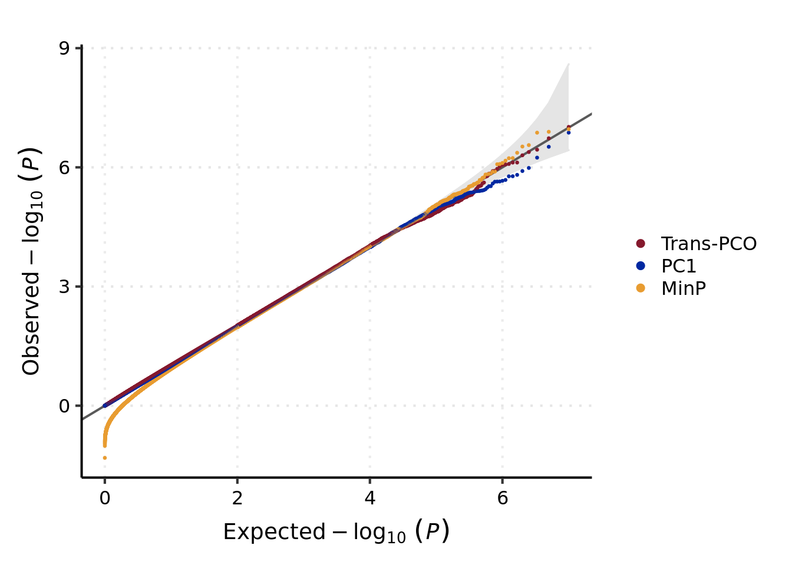

Run null simulations to show trans-pco and the other two methods, i.e. minP and PC1, are well-calibrated.
First, load required packages.
rm(list = ls())
library(mvtnorm)
source("/home/liliw1/Trans/plot/theme_my_pub.R")Give input files and parameters. To make it simple (and fast), here I simulate only \(10^3\) simulations (in the paper, \(10^7\) tests were simulated).
n_sim <- 10^3# I/O & paras -----
dir_pco <- 'simulation/script_lambda0.1/'
file_Sigma <- '/project2/xuanyao/llw/simulation_lambda0.1/new_Sigma/Sigma-new_DGN_module29_K101.rds'Read files and source pco test scripts.
# read files -----
# source pco test
source(paste0(dir_pco, "ModifiedPCOMerged.R"))
source(paste0(dir_pco, "liu.R"))
source(paste0(dir_pco, "liumod.R"))
source(paste0(dir_pco, "davies.R"))
dyn.load(paste0(dir_pco, "qfc.so"))
source(paste0(dir_pco, "ModifiedSigmaOEstimate.R"))
Sigma <- as.matrix(readRDS(file_Sigma))
K <- dim(Sigma)[1]Simulate null z-scores using the given \(\Sigma\) of a gene module from real dataset.
# simulate null z-scores -----
set.seed(123)
p_null_all <- list()
z_null <- rmvnorm(n_sim, rep(0, K), Sigma)Run pco test and calculate p-values,
# prepare eigenvalues and eigenvectors as input for three methods -----
SigmaO <- ModifiedSigmaOEstimate(Sigma)
eigen_res <- eigen(Sigma)
eigen_lamb <- eigen_res$values
eigen_vec <- eigen_res$vectors
# PCO
p_null_all$'p.null.PCO' <- ModifiedPCOMerged(
Z.mat = z_null, Sigma = Sigma, SigmaO = SigmaO
) |> as.numeric()## PCMinP done.
## PCFisher done.
## PCLC done.
## WI done.
## Wald done.
## VC done.
## PCO done.cat("PCO done. \n\n")## PCO done.Run pc1 test and calculate p-values,
# PC1
PC1 <- z_null %*% eigen_vec[, 1]
p_null_all$'p.null.PC1' <- 2*pnorm(-abs(PC1/sqrt(eigen_lamb[1])))|> as.numeric()
cat("PC1 done. \n\n")## PC1 done.Run minp test and calculate p-values,
# univariate minp
p_null_all$'p.null.minp' <- apply(z_null, 1, function(x) min(1-pchisq(x^2, 1))*length(x) )
cat("minp done. \n\n")## minp done.Finally, take a look at the calculated p-values on null z’s.
str(p_null_all)## List of 3
## $ p.null.PCO : num [1:1000] 0.867 0.561 0.287 0.312 0.724 ...
## $ p.null.PC1 : num [1:1000] 0.349 0.633 0.771 0.162 0.679 ...
## $ p.null.minp: num [1:1000] 1.313 0.871 1.747 0.457 1.101 ...First, load required packages.
rm(list = ls())
library(tidyverse)## ── Attaching packages ─────────────────────────────────────── tidyverse 1.3.1 ──## ✔ ggplot2 3.3.6 ✔ purrr 0.3.4
## ✔ tibble 3.1.7 ✔ dplyr 1.0.7
## ✔ tidyr 1.2.0 ✔ stringr 1.4.0
## ✔ readr 2.1.2 ✔ forcats 0.5.1## ── Conflicts ────────────────────────────────────────── tidyverse_conflicts() ──
## ✖ dplyr::filter() masks stats::filter()
## ✖ dplyr::lag() masks stats::lag()source("/home/liliw1/Trans/plot/theme_my_pub.R")Files of simulated null p-values,
# I/O & paras -----
file_dat_null <- "/project2/xuanyao/llw/simulation_lambda0.1/new_Sigma/simulation.null.lambda0.1.K101.rds"
ci_level <- 0.95# read files -----
p_null_all <- readRDS(file_dat_null)
# organize data -----
## reset obs p-values that are 0 to a fixed value, here I use the min non-zero p/10 -----
input <- as_tibble(p_null_all)
input[input == 0] <- min(input[input != 0])/10
## number of samples -----
n <- nrow(input)
## expected null p -----
expected <- seq(1, n) / (n+1)
lexp <- -log10(expected)
## order statistic of null p -----
ci_l <- -log10( qbeta(p = (1 - ci_level) / 2, shape1 = 1:n, shape2 = n:1) )
ci_r <- -log10( qbeta(p = (1 + ci_level) / 2, shape1 = 1:n, shape2 = n:1) )
## obs -----
observed <- apply(input, 2, sort) %>% as.data.frame()
lobs <- -log10(observed)
## take only a subset of null p's, to save image space -----
ind_sub <- c(
1:sum(lexp > 4),
seq(from = sum(lexp > 4), to = sum(lexp > 2), length.out = 2000) %>% ceiling(),
seq(from = sum(lexp > 2), to = n, length.out = 2000) %>% ceiling()
)
# data for plt -----
df_plt <- cbind(data.frame(x = lexp, ci_l = ci_l, ci_r = ci_r), lobs) %>%
slice(ind_sub) %>%
pivot_longer(-c(x, ci_l, ci_r), names_to = "Type", values_to = "y")
## set group order in plt -----
group_order <- c("p.null.PCO", "p.null.PC1", "p.null.minp")
group_label <- c("Trans-PCO", "PC1", "MinP")
group_order <- if(is.null(group_order)) unique(df_plt$Type) else group_order
group_label <- if(is.null(group_label)) group_order else group_label
df_plt$Type <- factor(df_plt$Type, levels = group_order, labels = group_label)
# QQ-plot of null p-values by three association tests -----
base_plt <- ggplot(df_plt, aes(x = x, y = y, group = Type)) +
geom_ribbon(aes(ymin = ci_l, ymax = ci_r), fill = "#e5e5e5", color = "#e5e5e5") +
geom_abline(slope = 1, intercept = 0, color = "#595959", size = 0.7) +
geom_point(aes(color = Type), size = 0.5) +
labs(x = bquote(Expected -log[10]~italic((P))),
y = bquote(Observed -log[10]~italic((P))),
color = NULL)
base_plt +
scale_color_manual(
values = c("#85192d", "#0028a1", "#e89c31"),
guide = guide_legend(override.aes = list(size = 2))
) +
theme_my_pub() +
theme(
panel.grid.major.x = element_line(linetype = "dotted"),
panel.grid.major.y = element_line(linetype = "dotted"),
legend.background = element_blank(),
legend.position = "right",
axis.title = element_text(size = 14),
axis.text = element_text(colour = "black", size = 12)
)
sessionInfo()## R version 4.1.2 (2021-11-01)
## Platform: x86_64-conda-linux-gnu (64-bit)
## Running under: Ubuntu 20.04.3 LTS
##
## Matrix products: default
## BLAS/LAPACK: /scratch/midway2/liliw1/conda_env/rstudio-server/lib/libopenblasp-r0.3.18.so
##
## locale:
## [1] LC_CTYPE=en_US.UTF-8 LC_NUMERIC=C
## [3] LC_TIME=en_US.UTF-8 LC_COLLATE=en_US.UTF-8
## [5] LC_MONETARY=en_US.UTF-8 LC_MESSAGES=en_US.UTF-8
## [7] LC_PAPER=en_US.UTF-8 LC_NAME=C
## [9] LC_ADDRESS=C LC_TELEPHONE=C
## [11] LC_MEASUREMENT=en_US.UTF-8 LC_IDENTIFICATION=C
##
## attached base packages:
## [1] stats graphics grDevices utils datasets methods base
##
## other attached packages:
## [1] forcats_0.5.1 stringr_1.4.0 dplyr_1.0.7 purrr_0.3.4
## [5] readr_2.1.2 tidyr_1.2.0 tibble_3.1.7 ggplot2_3.3.6
## [9] tidyverse_1.3.1 mvtnorm_1.1-3
##
## loaded via a namespace (and not attached):
## [1] Rcpp_1.0.8.3 lubridate_1.8.0 assertthat_0.2.1 digest_0.6.29
## [5] utf8_1.2.2 R6_2.5.1 cellranger_1.1.0 backports_1.4.1
## [9] reprex_2.0.1 evaluate_0.14 httr_1.4.2 highr_0.9
## [13] pillar_1.7.0 rlang_1.0.3 readxl_1.3.1 rstudioapi_0.13
## [17] jquerylib_0.1.4 rmarkdown_2.11 labeling_0.4.2 munsell_0.5.0
## [21] broom_0.7.12 compiler_4.1.2 modelr_0.1.8 xfun_0.29
## [25] pkgconfig_2.0.3 htmltools_0.5.2 tidyselect_1.1.1 fansi_1.0.3
## [29] crayon_1.5.1 tzdb_0.2.0 dbplyr_2.1.1 withr_2.5.0
## [33] grid_4.1.2 jsonlite_1.7.3 gtable_0.3.0 lifecycle_1.0.1
## [37] DBI_1.1.3 magrittr_2.0.3 scales_1.2.0 cli_3.3.0
## [41] stringi_1.7.6 farver_2.1.1 fs_1.5.2 xml2_1.3.3
## [45] bslib_0.3.1 ellipsis_0.3.2 generics_0.1.2 vctrs_0.4.1
## [49] tools_4.1.2 glue_1.6.2 hms_1.1.1 fastmap_1.1.0
## [53] yaml_2.2.2 colorspace_2.0-3 rvest_1.0.2 knitr_1.37
## [57] haven_2.4.3 sass_0.4.0